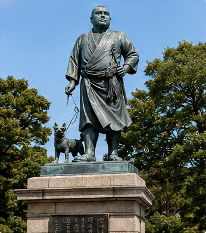
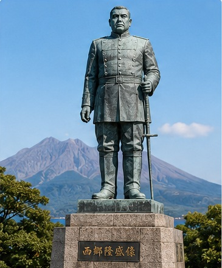
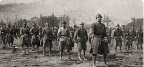
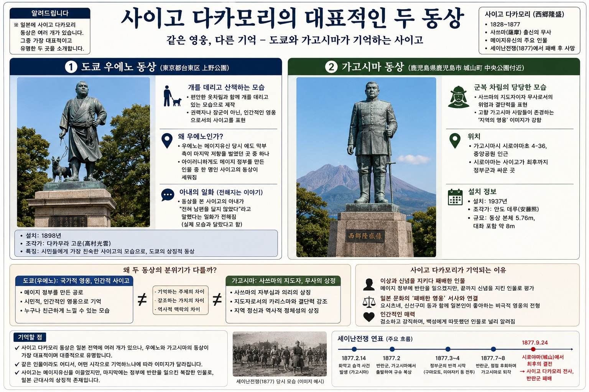

그림 출처 안내 — 이 자료의 사진·그림은 사용자가 올린 인포그래픽 이미지에서 잘라낸 것입니다. 원 촬영자·제작자·이용 허락을 알 수 없고, 화풍으로 보아 AI로 생성한 이미지가 섞여 있을 수 있습니다. 책에 싣는 용도로는 쓸 수 없으며, 출간 때는 직접 촬영하거나 이용 허락을 받은 사진·공개 도판으로 바꿔야 합니다.
사이고 다카모리 (西郷隆盛)
1828~1877
사쓰마(薩摩) 출신의 무사
메이지 유신의 주요 인물
세이난전쟁(1877)에서 패한 뒤 사망
일본에는 사이고 동상이 여러 개 있습니다. 이 자료는 그중 가장 대표적이고 유명한 두 곳(도쿄 우에노, 가고시마)을 소개합니다.
같은 영웅, 다른 기억 — 두 동상
① 도쿄 우에노 동상

도쿄 우에노 공원의 사이고 동상(원본 인포그래픽에서 잘라냄)
위치: 도쿄도 다이토구 우에노 공원(上野公園)
설치: 1898년
조각가: 다카무라 고운(高村光雲)
모습: 편한 옷차림으로 개를 데리고 산책하는 모습
② 가고시마 동상

가고시마 시로야마 부근의 사이고 동상(원본 인포그래픽에서 잘라냄)
위치: 가고시마시 시로야마초(城山町) 중앙공원 부근
설치: 1937년
조각가: 안도 데루(安藤照)
모습: 군복 차림의 당당한 모습
규모: 인포그래픽은 본체 5.76m, 대좌 포함 약 8m로 적음 수치 확인 필요
도쿄 우에노 동상 읽기
왜 우에노인가
우에노는 메이지 유신 직후인 1868년 에도 막부 쪽 세력(쇼기타이)이 마지막으로 저항했던 곳 중 하나입니다. 그런데 새 정부를 만든 사람 중 한 명인 사이고의 동상이 그곳에 세워졌다는 점이 아이러니하다고 인포그래픽은 짚습니다.
왜 개를 데리고 있는가
권력자나 장군이 아니라, 편안한 옷차림의 인간적인 영웅으로 표현했습니다. 시민에게 가장 친숙한 사이고의 모습이며 도쿄의 상징적 동상입니다.
아내의 일화 전해지는 이야기
동상을 본 사이고의 아내가 “전혀 남편을 닮지 않았다”고 말했다는 이야기가 전해집니다(실제 모습과 달랐다고 함). 일화 형태로만 전하므로 책에 쓸 때는 출전을 확인해야 합니다.
가고시마 동상 읽기
군복 차림으로 서 있는 이 동상은 사쓰마의 지도자이자 무사로서의 위엄과 결단력을 표현합니다. 고향 가고시마 사람들이 존경하는 ‘지역의 영웅’ 이미지가 강합니다. 인근 시로야마는 사이고가 최후까지 정부군과 싸운 곳입니다.
두 동상의 분위기가 다른 이유
도쿄(우에노)
가고시마
기억하는 주체
국가적 영웅, 시민
사쓰마의 지도자, 고향 사람들
강조하는 가치
메이지 정부를 만든 공로, 인간적 친근함
자부심과 의리, 지도자의 카리스마·결단력
역사적 맥락
누구나 친근하게 느낄 수 있는 모습
지역 정신과 역사적 정체성의 상징
사이고가 기억되는 이유 (인포그래픽의 설명)
이상과 신념을 지키다 패배한 인물 — 메이지 정부에 반란을 일으켰지만 끝까지 신념을 지킨 인물로 평가됩니다.
‘패배한 영웅’ 서사와의 연결 — 요시쓰네 등과 함께 일본인이 좋아하는 비극적 영웅의 전형으로 이야기됩니다.
인간적인 매력 — 검소하고 강직하며 백성에게 따뜻했던 인물로 알려져 있습니다.
세이난전쟁(1877) 흐름

인포그래픽의 “세이난전쟁 당시 모습(이미지 예시)” — 실제 사진이 아니라 예시 이미지로 표시되어 있음
1877.1사학교 생도들이 가고시마의 화약고를 습격 원문은 2.14로 적음
1877.2반란군이 가고시마를 떠나 구마모토로 북상
1877.3 초정부군의 반격 시작(다바루자카 등)
1877.7~8반란군 후퇴, 가고시마로 물러남
1877.9.24시로야마에서 최후의 결전 사이고 사망, 반란군 패배
일본 쪽 자료(imidas)는 화약고 습격을 1877년 1월 30일로 적습니다. 인포그래픽의 ‘2.14’는 사이고가 거병을 결심한 시점과 섞였을 가능성이 있어 보이므로, 정확한 날짜는 원문으로 확인해야 합니다.
한국 독자에게 던질 질문 보충
이 인포그래픽에는 한국과 관련된 내용이 없습니다. 한국 독자에게는 사이고가 1873년 정한론 논쟁의 중심 인물이라는 점이 가장 중요한 접점입니다. 일본에서는 ‘사랑받는 패배한 영웅’으로 기억되는 인물이 한국에서는 조선 침략 논의와 연결되어 평가된다는 차이를 책의 한 장면으로 쓸 수 있습니다.
다만 사이고가 조선에 사절로 가려 한 진의(무력 침공론인가 평화적 교섭인가)는 일본 학계에서도 의견이 갈립니다. 한국과 일본의 서술을 나란히 소개하는 편이 안전합니다. (학습 트리 항목 e10-11 ‘정한론과 1873년 정변’ 참조)
확인 필요 사항
세이난전쟁 시작 날짜(화약고 습격 1월 말, 거병·출발 2월 중순)를 사료로 확인
가고시마 동상의 높이 수치와 정확한 위치
아내 일화의 출전
우에노 동상 ‘개’의 의미와 제작 경위(다카무라 고운 외 관여자)
요시쓰네·신센구미 등 ‘비극적 영웅’ 서사 설명은 인포그래픽의 해석이므로 일본 문학·역사 연구로 보강
원본 인포그래픽

사용자가 올린 원본 인포그래픽(제목: 사이고 다카모리의 대표적인 두 동상)
참고
「西南戦争」, imidas 歴史行事 — imidas.jp (화약고 습격 1월 30일, 시로야마 9월 24일 확인)
사용자 제공 인포그래픽 이미지(출처 미확인)
학습 트리 항목: e10-04 자유민권운동과 서남전쟁, e10-11 정한론과 1873년 정변, e10-33 사이고 다카모리와 두 동상